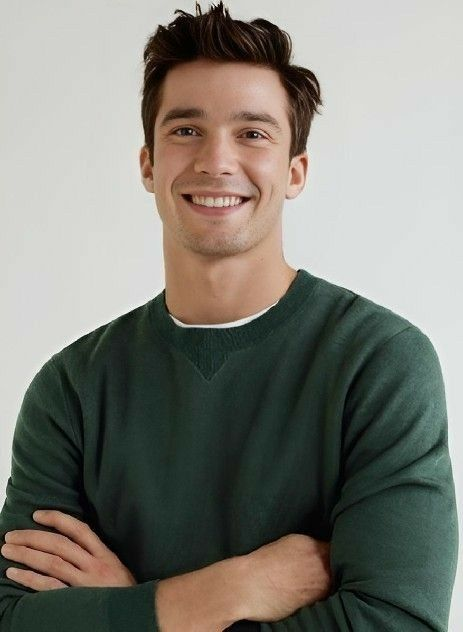
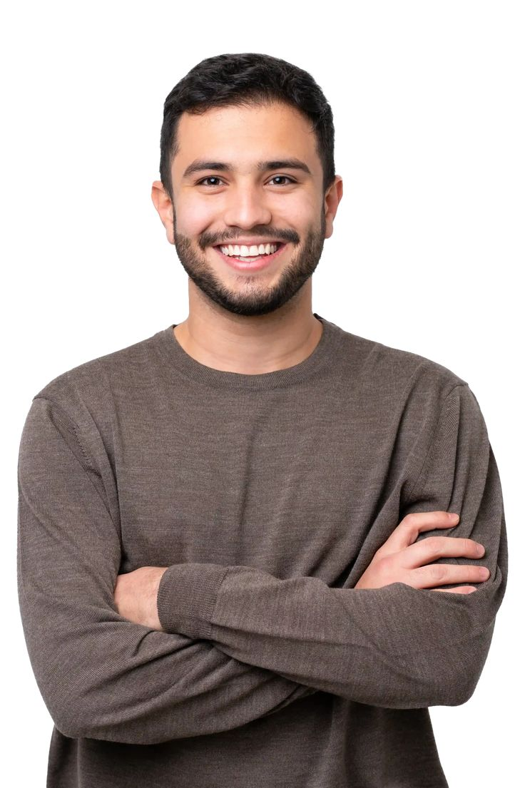

Арсений
философ, доктор наук

Тренер сборной по философии: знает, как выстроить методологию подбора, основываясь на личностных характеристиках
12 книг на 12 месяцев -
«Ещё со школы чтение не казалось мне интересным. Тогда я думал, что все книги — это классические произведения, и поэтому особого желания читать у меня не было. Сначала я скептически относился к этой затее, однако в Kitaboom мне подобрали книги, которые действительно мне понравились. Теперь я не могу остановиться — уже закончил 8-ю книгу за полгода. Читайте детективы если вам нравится, это ничем не хуже Гоголя или Достоевского, когда главное читать »
Данияр, 31
Покупаешь книги по советам друзей, и они месяцами лежат недочитанными.
Хочешь читать на казахском или английском, но не знаешь, с какого уровня начать.
Универсальные списки «100 книг» которые должен прочитать каждый оказываются не для всех
и в итоге — потраченные деньги, брошенные книги и ощущение «я просто не читающий человек». Но дело в подборе книг а не в читателе
Каждая книга в твоём году выбрана не наугад — вот что стоит за подбором.
Рекомендации бьют точно в цель и подбор получается индивидуальным
Подбор учитывает не только вкус, но и то, что важно вам сейчас.
Понятный ритм без перегруза
Литература на казахском, русском или английском
Книга по силам — не отбивает желание читать дальше.
Не понравилась книга? Заменим, без сбоя всего годового плана.
Короткий тест и разговор с психологом/философом — 20–30 минут.
Анализирует уровень языка и интересы, строит логичную траекторию на год.
12 книг на выбранном языке — с возможностью менять по ходу.
философ, доктор наук

Тренер сборной по философии: знает, как выстроить методологию подбора, основываясь на личностных характеристиках
философ, Oxford
Оксфордское образование в философии — отвечает за глубину интервью и логику годовой траектории.
технический специалист

Продукт и техническая часть алгоритма — от теста до годового плана чтения.
Тест фиксирует интересы и уровень языка, разговор с философом добавляет то, что важно вам сейчас. Из этого собирается год: 12 книг под человека, а не общий список «для всех».
Да. Год собран на одном языке — қазақша, русском или английском — и язык можно сменить по ходу, не разбирая весь план заново.
Заменим её. Остальные книги года остаются на своих местах, годовой план не сбивается.
Нет. Подбор идёт от текущего уровня: книга по силам, чтобы чтение не отбивало желание продолжать.
Философы команды — Арсений и Грегорий. Вместе с тестом разговор занимает 20–30 минут.